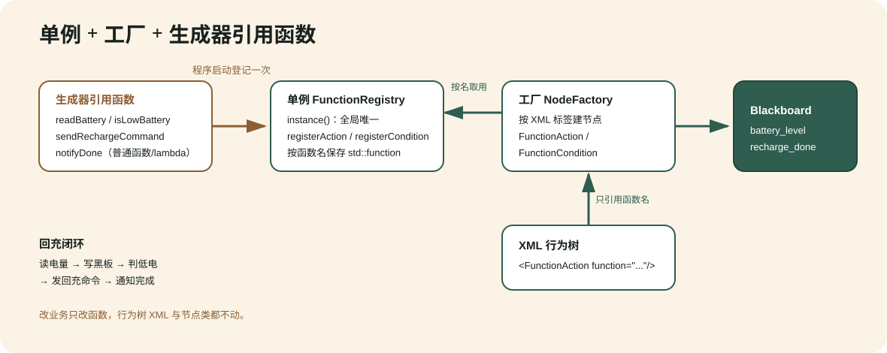

单例 + 工厂 + 生成器引用函数¶
本页把 examples/03_function_registry_recharge.cpp``（可执行 ``example_function_recharge）讲透，回答一个非常具体的诉求：
我要做回充：从外部（ROS2 msg 形式）拿到电量数据，然后怎么通过“调用”来完成回充？
示例用三种设计模式协作完成“读电量 → 写黑板 → 判低电 → 发回充命令 → 通知完成”的闭环。它不依赖真实 ROS2：用一个普通结构体 BatteryMsg 模拟 sensor_msgs/BatteryState，用自由函数 pollBatteryFromRos() 模拟“从 topic 回调里拿到最新一帧”，因此本机可跑可验。真实项目里只要把这一步换成 ROS2 回充教程 里的 ReadBattery``（订阅 ``/battery_state 并写黑板），业务函数完全不用改。
三模式各自负责什么¶
{kind=link}

模式 |
代码落点 |
负责什么 |
|---|---|---|
单例 Singleton |
|
全局唯一的业务函数注册表。程序启动时登记一次，任何地方都能按名取用；避免到处传递注册表指针。 |
工厂 Factory |
|
按注册名把 XML 标签创建成节点实例。行为树的 XML、编辑器、插件都通过它建树，节点实现与使用解耦。 |
生成器引用函数 |
注册进单例表的 |
把“读电量、判低电、发命令、通知完成”写成普通函数（可捕获状态、可复用），XML 只用函数名引用，不和任何具体节点类耦合。改业务只改函数，不动树。 |
一句话概括边界：单例管“函数存在哪”，工厂管“节点怎么造”，生成器函数管“业务做什么”。 三者通过黑板交换数据。
业务函数：写成普通函数¶
业务逻辑写成 FunctionRegistry 约定的签名 ActionFunction / ConditionFunction，通过 ctx.blackboard 读写共享黑板实现数据流：
// 动作：读电量 → 写黑板 battery_level。等价于 ROS2 的 ReadBattery 节点。
NodeStatus readBatteryFn(const FunctionContext& ctx) {
const BatteryMsg msg = pollBatteryFromRos();
ctx.blackboard->set<double>("battery_level", msg.percentage);
return NodeStatus::SUCCESS;
}
// 条件：电量是否低于 20%（低电量需要回充）。
bool isLowBatteryFn(const FunctionContext& ctx) {
const double v = ctx.blackboard->get<double>("battery_level").value_or(1.0);
return v < 0.20;
}
// 动作：同步示例中记录回充命令；不等价于等待 dock 的异步 RechargeTask。
NodeStatus sendRechargeCommandFn(const FunctionContext& ctx) {
const std::string target =
ctx.blackboard->get<std::string>("dock_target").value_or("main_dock");
ctx.blackboard->set<std::string>("last_command", "start_recharge:" + target);
return NodeStatus::SUCCESS;
}
// 动作：上报任务完成。等价于 ROS2 的 TaskDoneNotifier 节点。
NodeStatus notifyDoneFn(const FunctionContext& ctx) {
ctx.blackboard->set<bool>("recharge_done", true);
return NodeStatus::SUCCESS;
}
单例：程序启动时登记一次¶
auto& registry = FunctionRegistry::instance();
registry.registerAction("readBattery", readBatteryFn);
registry.registerAction("sendRechargeCommand", sendRechargeCommandFn);
registry.registerAction("notifyDone", notifyDoneFn);
registry.registerCondition("isLowBattery", isLowBatteryFn);
此后任何 FunctionAction / FunctionCondition 节点都能按名取用。registerAction / registerCondition 遇到空名或空回调会抛 std::invalid_argument；同名注册会覆盖旧回调。
工厂：把标签变成节点¶
NodeFactory factory;
factory.registerNodeType<bt_nodes::SequenceNode>("Sequence");
factory.registerNodeType<bt_nodes::FallbackNode>("Fallback");
factory.registerNodeType<bt_nodes::CompareBlackboardNode>("CompareBlackboard");
factory.registerNodeType<bt_nodes::FunctionActionNode>("FunctionAction");
factory.registerNodeType<bt_nodes::FunctionConditionNode>("FunctionCondition");
行为树 XML 就是靠工厂按注册名把标签变成节点实例。
行为树 XML：只出现函数名¶
XML 里没有任何业务类，只有函数名。用 Fallback 做回充守卫：先走“电量充足”分支，失败（电量低）时落到“回充”分支：
<root main_tree_to_execute="RechargeTree">
<BehaviorTree ID="RechargeTree">
<Fallback name="battery_guard">
<Sequence name="battery_ok">
<FunctionAction name="read_battery_ok" function="readBattery"/>
<CompareBlackboard name="enough_power"
key="battery_level" op=">=" value="0.20"/>
</Sequence>
<Sequence name="recharge_flow">
<FunctionAction name="read_battery_low" function="readBattery"/>
<FunctionCondition name="needs_recharge" function="isLowBattery"/>
<FunctionAction name="send_command" function="sendRechargeCommand"/>
<FunctionAction name="notify_done" function="notifyDone"/>
</Sequence>
</Fallback>
</BehaviorTree>
</root>
回充闭环数据流¶
一次 tick 里数据如何在“外部世界 → 黑板 → 判断 → 命令”之间流动：
步 |
节点 |
调用的函数 |
对黑板的影响 |
|---|---|---|---|
1 |
|
|
从（模拟）``/battery_state`` 读电量，写入 |
2 |
|
|
读 |
3 |
|
|
读 |
4 |
|
|
写 |
运行与验证¶
cmake -S . -B build -DBT_BUILD_NODES=ON -DBT_BUILD_TESTS=ON
cmake --build build --target example_function_recharge
./build/bin/example_function_recharge
真实输出（两个场景）：
已注册业务函数: 3 个动作, 1 个条件
=== 场景 A：电量 80%（充足） ===
[readBattery] ... 读到电量=80%
根结果: SUCCESS | recharge_done=false
=== 场景 B：电量 12%（低电量，触发回充） ===
[readBattery] ... 读到电量=12%
[isLowBattery] ... 低电量, 需要回充
[sendRechargeCommand] ... start_recharge:main_dock
[notifyDone] ... task_done:recharge
根结果: SUCCESS | recharge_done=true
场景 A 电量充足，Fallback 第一个分支直接成功，不回充；场景 B 电量低，第一分支失败落到回充分支，完成整条闭环并把 recharge_done 置 true。
从示例到真实 ROS2¶
这个示例用于讲解同步函数注册表；它没有模拟真实回充所需的跨 tick 等待、超时和 halt/retry。接真实 ROS2 时保留黑板判断思路，但把 I/O 边界换成完整节点：
把
readBattery换成 ROS2 回充教程 里的ReadBattery``（``RosInputNode<BatteryState>），订阅/battery_state并setOutput到黑板battery_level。把同步
sendRechargeCommand换成 ROS2 回充教程 中的RechargeTask，由它每次尝试发布一次并等待 dock；完成后使用TaskDoneNotifier。判断分支可继续用
CompareBlackboard/ScalarThreshold/FunctionCondition，因为它们只读黑板battery_level，与消息类型无关。
这正是“函数引用 + 黑板解耦”的价值：纯判断函数可以跨传输层复用；涉及异步 I/O 生命周期的动作则由专用状态机节点承接，而不是把同步示例原样搬到机器人上。